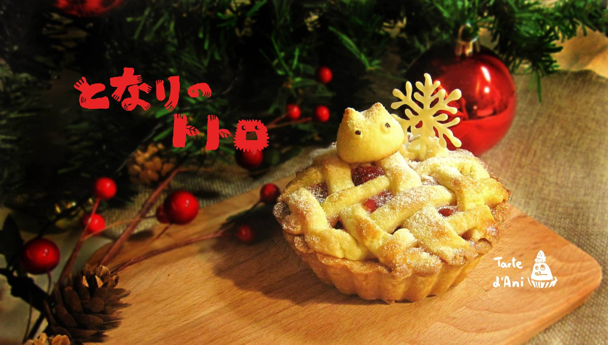
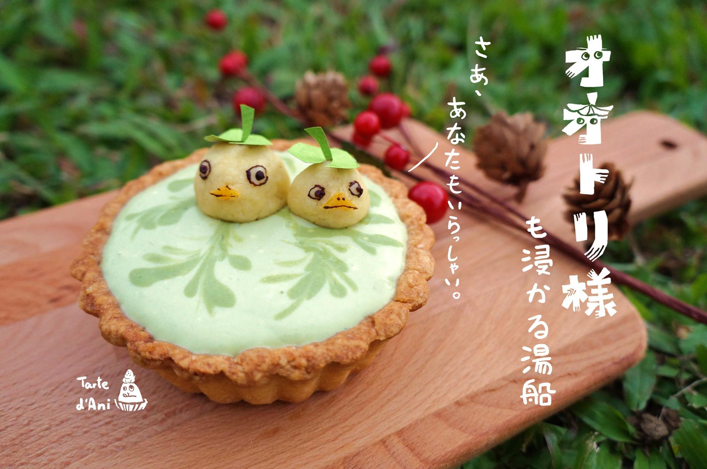
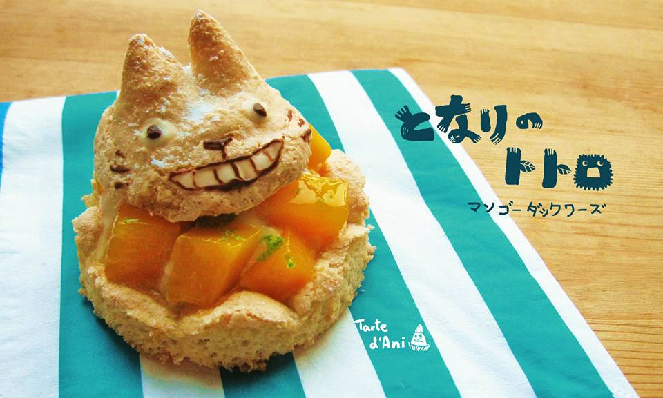
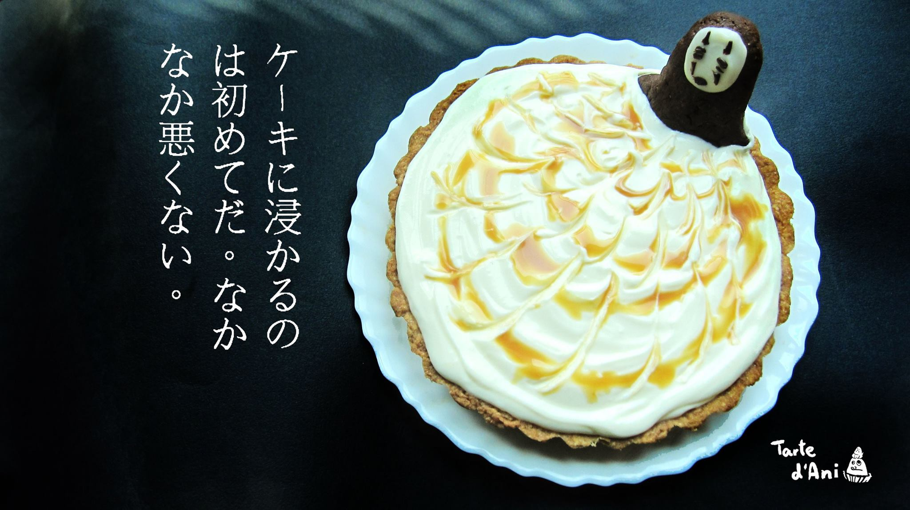
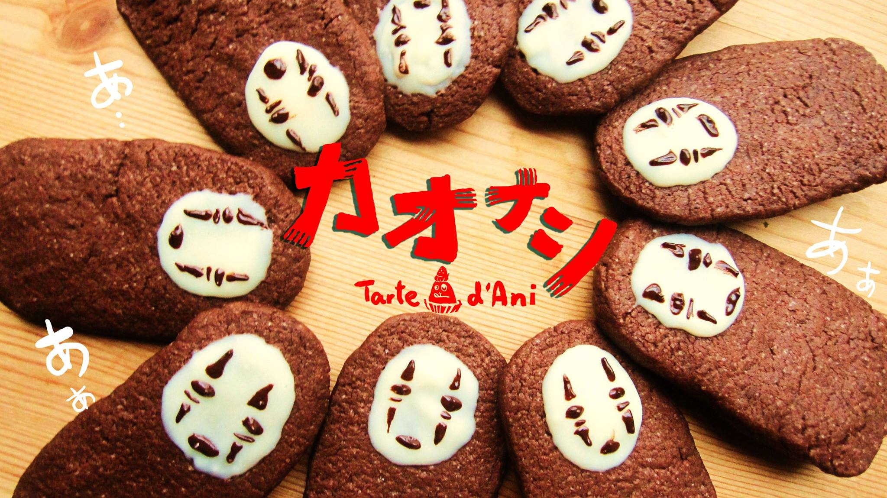
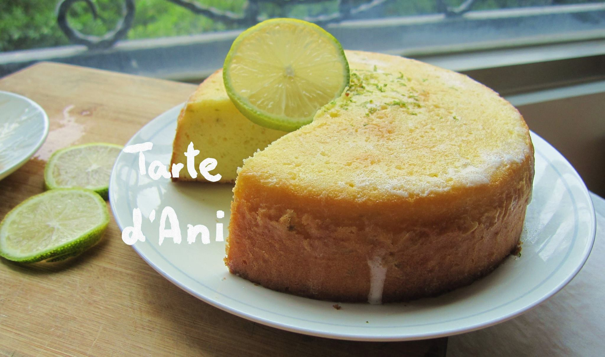
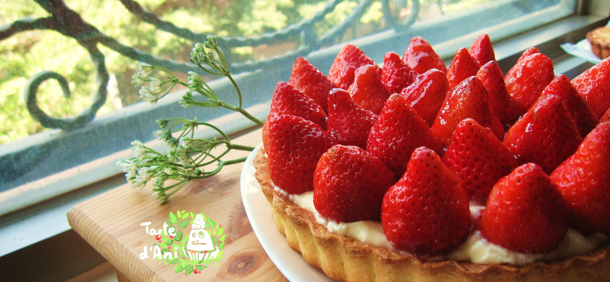

尼俺的塔：手工甜點粉絲專頁
共同經營者：周姵瑄、Ani Hsu
逛逛尼俺的塔：click here
緣起
大學時，與朋友一同創立的粉絲專頁，紀錄我們的甜點、夢想與歡笑。一開始，只是想替朋友記錄下她的才華，沒想到在我們天馬行空的討論中，卻經營得愈發起勁。製作甜點與美麗的圖畫是我朋友的專長，而控制時程及粉絲專業的經營、宣傳與文案便是我的工作。偶爾，我們也在學校的活動中擺攤，販售甜食與笑靨，更結交新朋友。盡情揮灑我們用錯了地方的創意。
粉專內容摘綠
"天冷了，下雪了，妳們可好嗎？
我總是記著大雨中，妳們遞出的那把傘；
總是記得妳們天真燦爛的笑容，酸酸甜甜在心底發酵，
埋藏一片冰霜大地之下。
人若浮游，而我的壽命無盡窮。"
小小的龍貓在初雪中凝望，
層層疊疊的地底世界，酸甜雜錯的心。
從最上層的肉桂蘋果尬越橘莓果醬，
一路挖掘到最下層莓果杏仁奶油，
藏匿心底的那一抹甜。
編織的派皮是大地的經緯，
從天而降的雪花，是甜美的白巧克力；
飄落的糖粉細雪，構成這個凝凍的世界。
「再冷冽的荒蕪中，也總有甜蜜。」
小龍貓舔了一口唇邊的冰雪，淡淡地笑了。

最底層，
覆著一層柔軟香甜的雪白，入口Q彈，在唇齒間纏綿；
中層的綿密，是相思的味道，甜蜜入喉；
最表層的淡綠，勾勒濃麗的花紋；
香濃的奶香撲鼻，而後酸甜纏繞舌尖，鼻腔間卻是淡淡的，爽俐的茶香繚繞。
三種材料，三個口感，卻在口中完美結合，
一口複雜的，單純幸福。

Dacquoise
酥脆卻也鬆軟的口感，香甜而不膩口的達可瓦茲，配上香濃的卡士達內餡和酸甜的芒果，一口咬下，彷彿愛戀在齒間萌芽...

天氣轉涼了，寒冷的風拂過肌膚，
怎能不好好泡一場暖身暖心的溫泉？
乳白色的牛奶泉有美白的效果噢~
肉桂蘋果X乳酪 綴焦糖 佐無臉男(？)，
看著無臉男陶醉地沉陷，是不是也像他一樣地放鬆了呢？
塔尖第一口，香香濃濃的乳酪配上肉桂蘋果微微的酸甜，
香甜而不膩口，濃郁中依然清爽雋永。
乳酪的綿，蘋果的軟，塔皮的酥，
多層次的口感在唇齒間交融，豐富的滋味讓人不想停口。
再咬一口，吃到了無臉男的屁股(?!)，
乳酪和蘋果之間又多了一層鬆脆的巧克力口感，更形豐富且意外地和諧而不突兀。
誘惑你的視覺，挑逗你的味蕾，挑戰你的想像力；
絕對沒嘗過的口味，絕對沒試過的驚艷；
色香味俱全，不是說說而已。

那些年，我們千里追尋的...？是什麼？
「我好寂寞.....」
空洞的夜裡迴盪無臉男嚶嚶的悲鳴。
他帶著一個面具，笑著，假的，虛偽著，
格格不入地在這世界裡，渴求歸屬。
無臉男找到了自己的冀盼…
Wish our dream can also come true!
看圍成圈的無臉男們笑得何許燦爛。
終於，再也不是孤單一人；
終於，有了屬於自己的歸處；
終於，不再感到寂寞。
這一次，
假面的笑容染上真心，
虛無的軀體因情填實。
你看到了嗎？
無臉男的眼底灑濺光芒！
再蠢再天真，
這世上沒有不可能的夢想。
Nothing is impossible, the word itself says " I'm possible" !

檸檬糖霜蛋糕是什麼滋味？
「親愛的你說你心底甜甜的而鼻根酸酸的。入口一層薄脆，酸甜交雜。濃烈之後轉而馥郁的深刻，濃濃的奶香繚繞。親愛的這是初戀的味道，不一定最驚艷卻注定最難忘。」
就是，這個滋味。
最庸俗的譬喻就是最恰當的譬喻。
究竟我們都是俗人，
要像檸檬糖霜蛋糕般，樸素卻豐富，簡單而雋永。

先大口咬下紅豔的草莓，還要輕吸一口那飽滿的汁液才不會溢出唇齒，沿著腮邊流淌下來。
然後是香甜中帶著微酸的內餡，佐上香酥的塔皮。像是冬日的裡一道暖陽，令人忍不住想閉上眼睛。彷彿幸福的具象，曾經活生生地停駐在舌央，入喉回味，餘韻不絕。
